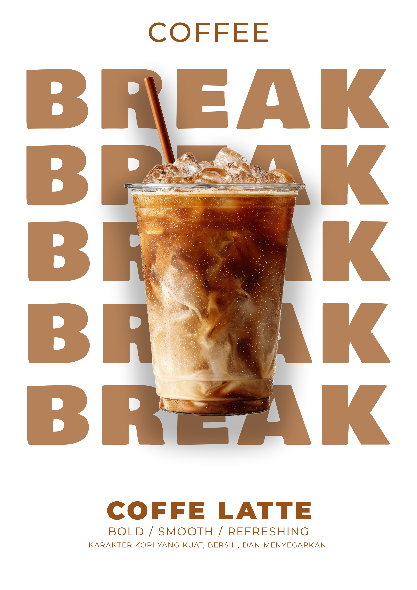
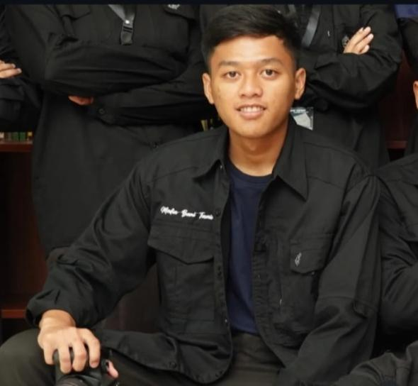
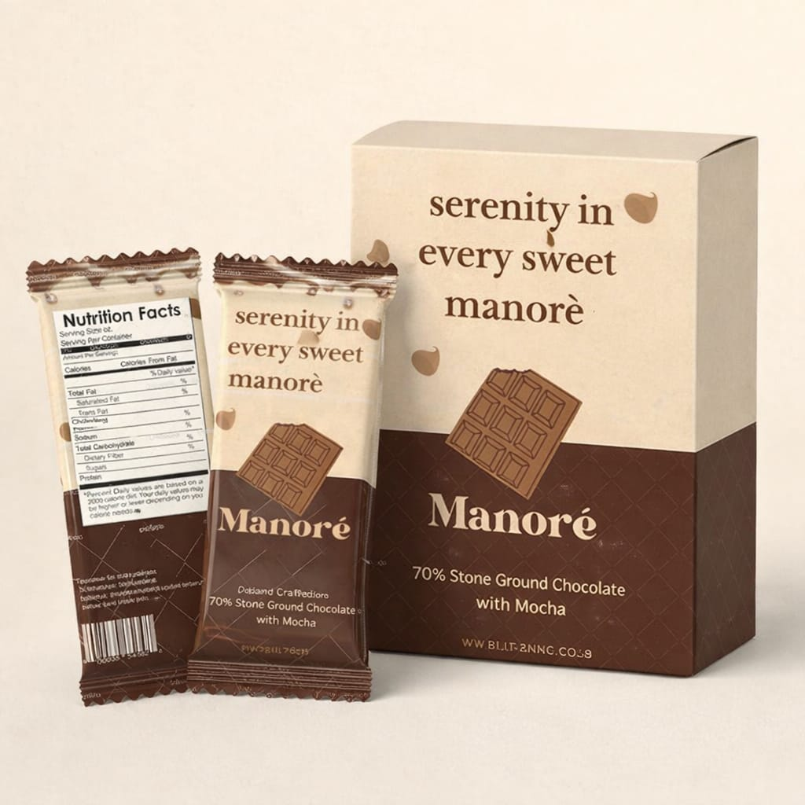
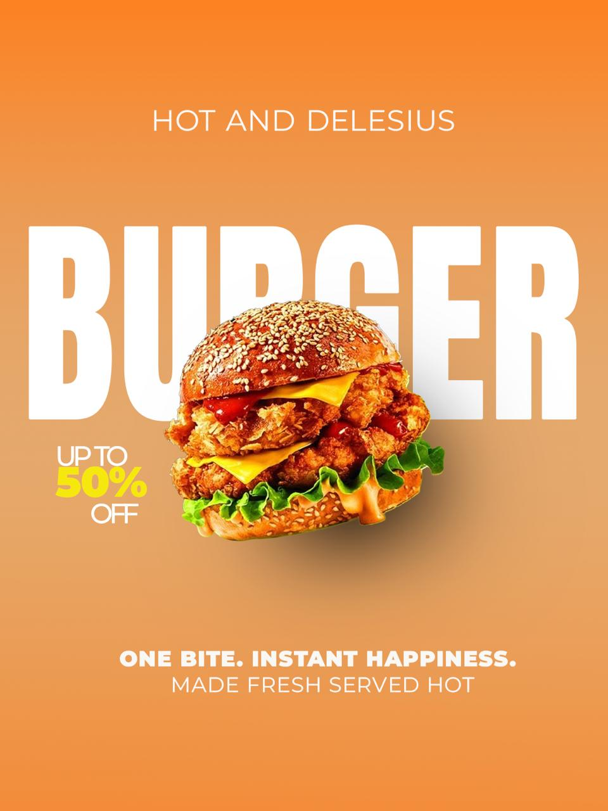
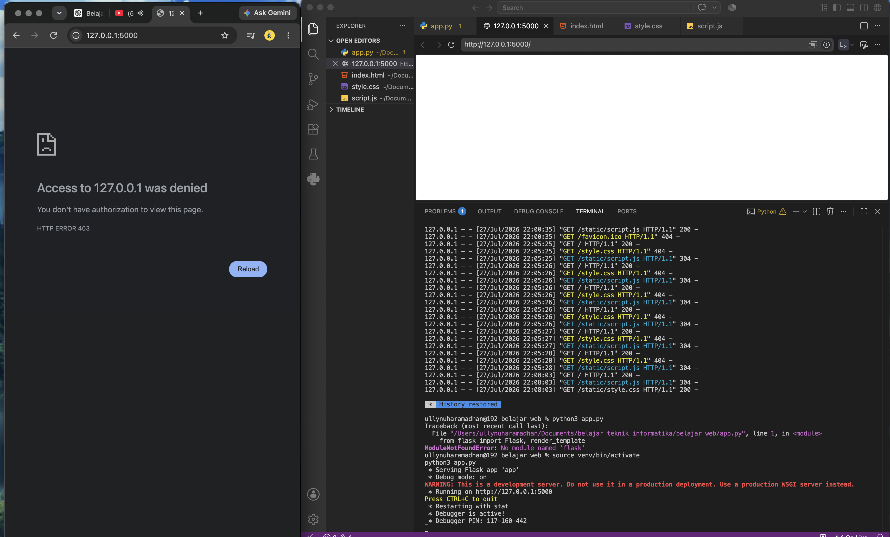
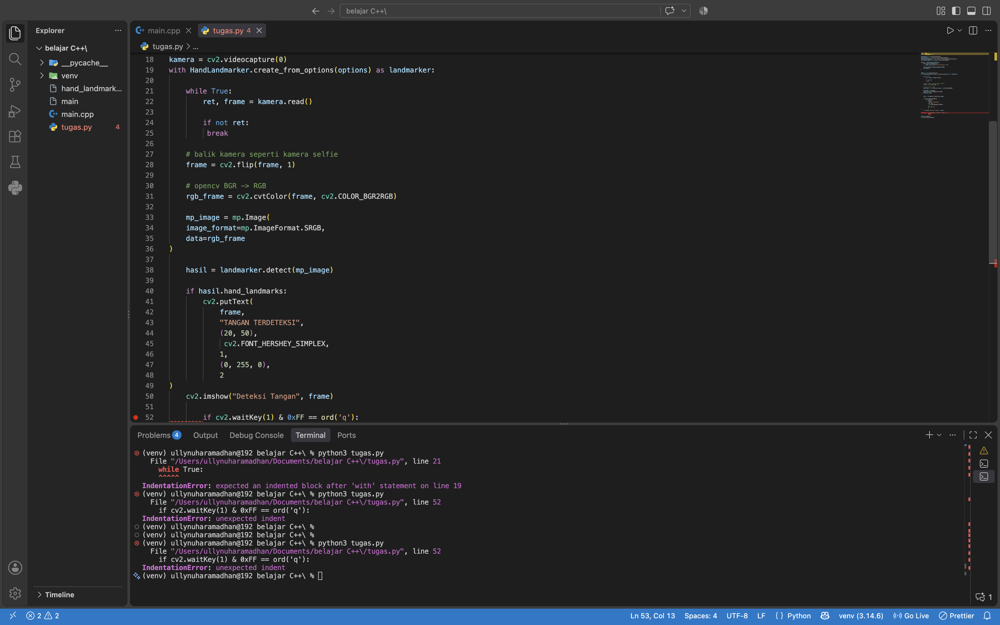

Lihat detailPOSTER
MAHASISWA TEKNIK INFORMATIKA
Merangkai kode.
Menghidupkan ide.
Mahasiswa Teknik Informatika yang mengeksplorasi pemrograman dan desain visual. Ini ruang untuk ide, eksperimen, dan karya saya.

HTML / CSS / JavaScript / Python / C++
VISUAL YANG BERCERITA

Lihat detailPOSTER

Lihat detailBRANDING

Lihat detailPOSTER
DARI IDE KE PRAKTIK

Ruang digital pribadi untuk memperkenalkan diri dan mendokumentasikan perjalanan belajar.

Eksplorasi computer vision melalui kamera dengan Python, OpenCV, dan MediaPipe.
MULTIMEDIA / MOTION & MOMENTS
Rangkaian cuplikan proses kreatif dan suasana sehari-hari dalam satu video pendek.
Buka video terpisah ↗Cuplikan monitor produksi dan suasana panggung dari area kontrol.
Buka video terpisah ↗